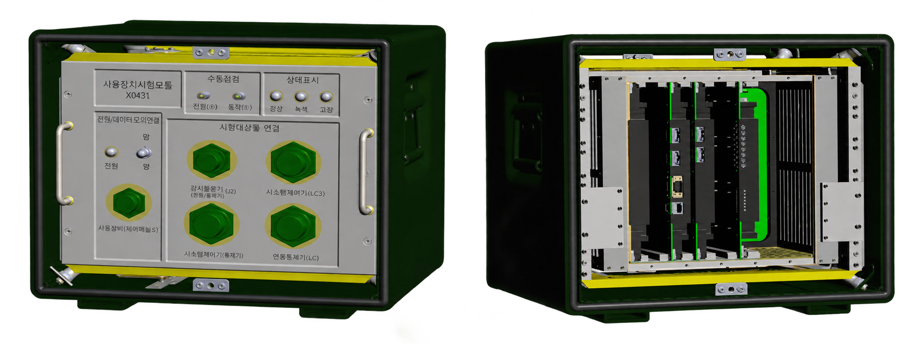

THG PROJECTS
THG가 만든 시험장비
제품 사진을 선택하면
각 장비의 상세 소개를 확인할 수 있습니다.

ELECTRONIC TEST EQUIPMENT
전자장비 시험장치
전자장비 시험을 위한 인터페이스와 내부 모듈로 구성한 제작 사례입니다.
상세보기 ↗
ROTATION TEST SYSTEM
회전 특성 시험 시스템
시험 콘솔과 회전 시험장치를 연결하여 회전 특성을 시험하는 시스템입니다.
상세보기 ↗
INTEGRATED TEST SYSTEM
통합 시험 시스템
다양한 계측장비와 운용 화면을 하나의 시험 환경으로 구성한 시스템입니다.
상세보기 ↗제품명은 공개용 일반 명칭입니다. 세부 사양과 프로젝트 정보는 개별 문의를 통해 안내드립니다.